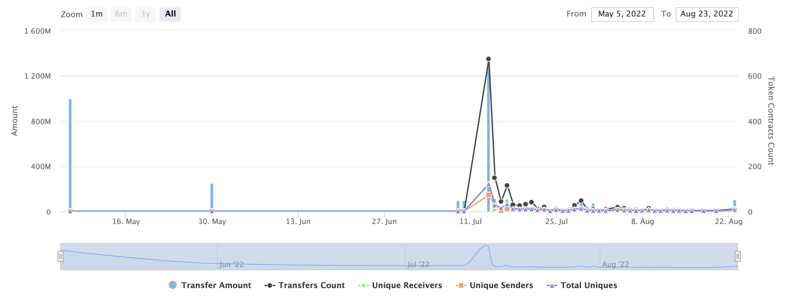
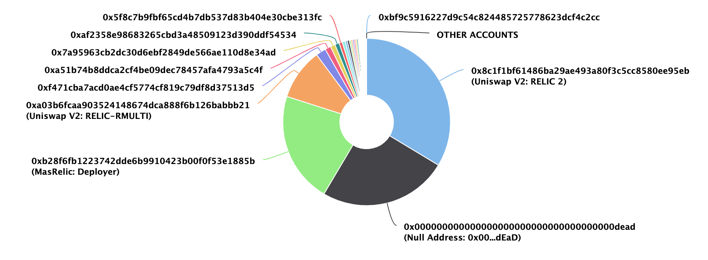
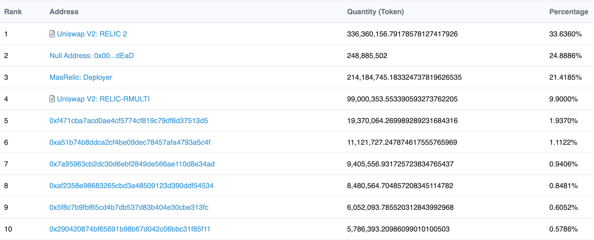
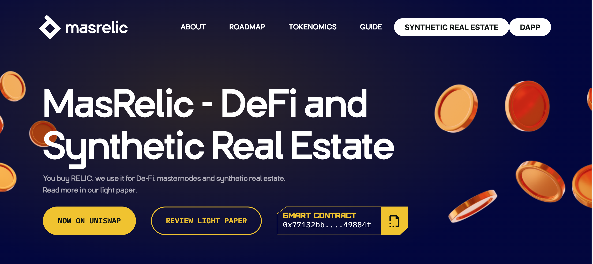
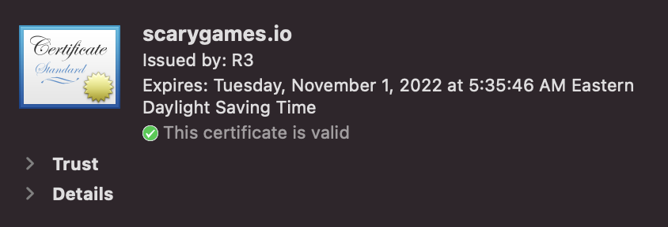
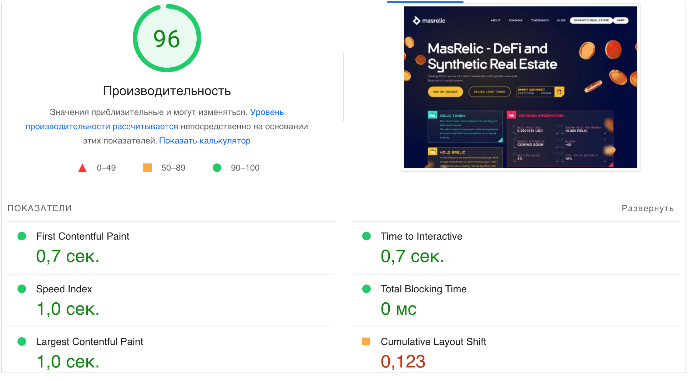
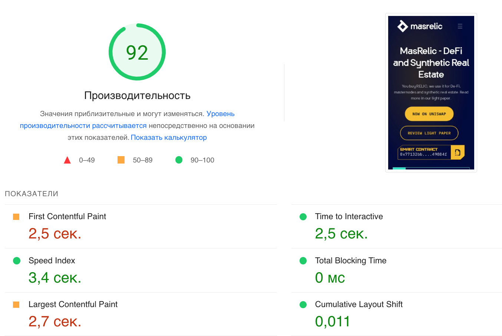
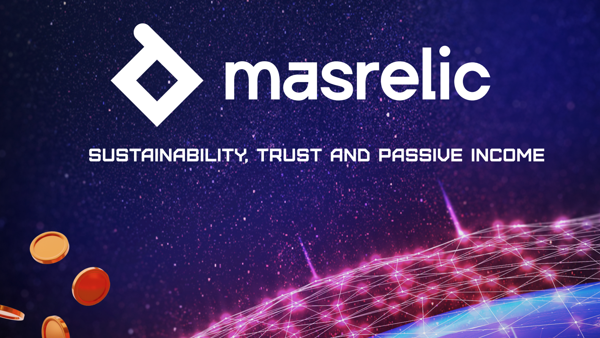
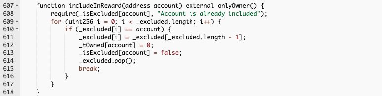
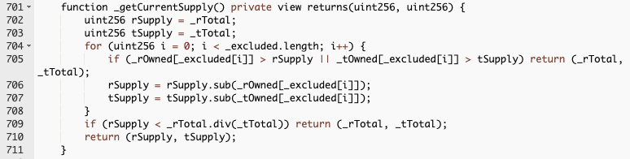

Smart contract
security audit
Masrelic
Scan and check this report
was posted at Soken Github
August, 2022
Website:
soken.ioTable of Contents
- Table of Contents 2
- Disclaimer 3
- Procedure 4
- Terminology 5
- Limitations 5
- Basic Security Recommendation 5
- Token Contract Details for 24.08.2022 6
- Audit Details 6
- Social Profiles 7
- Token Analytics 7
- RELIC Token Distribution 8
- Project Website Overview 9
- Project Website SSL Certification 9
- Project Website Optimization for Desktop 10
- Project Website Optimization for Mobile 10
- Whitepaper of the project 11
- Vulnerabilities checking 12
- Security Issues 13
- Conclusion 15
- Soken Contact Info 16
Disclaimer
This is a comprehensive report based on our automated and manual examination of cybersecurity vulnerabilities and framework flaws. We took into consideration smart contract based algorithms, as well. Reading the full analysis report is essential to build your understanding of project’s security level. It is crucial to take note, though we have done our best to perform this analysis and report, that you should not rely on the our research and cannot claim what it states or how we created it. Before making any judgments, you have to conduct your own independent research. We will discuss this in more depth in the following disclaimer - please read it fully. DISCLAIMER: You agree to the terms of this disclaimer by reading this report or any portion thereof. Please stop reading this report and remove and delete any copies of this report that you download and/or print if you do not agree to these conditions. This report is for non-reliability information only and does not represent investment advice. No one shall be entitled to depend on the report or its contents, and Soken and its affiliates shall not be held responsible to you or anyone else, nor shall Soken provide any guarantee or representation to any person with regard to the accuracy or integrity of the report. Without any terms, warranties or other conditions other than as set forth in that exclusion and Soken excludes hereby all representations, warrants, conditions and other terms (including, without limitation, guarantees implied by the law of satisfactory quality, fitness for purposes and the use of reasonable care and skills). The report is provided as "as is" and does not contain any terms and conditions. Except as legally banned, Soken disclaims all responsibility and responsibilities and no claim against Soken is made to any amount or type of loss or damages (without limitation, direct, indirect, special, punitive, consequential or pure economic loses or losses) that may be caused by you or any other person, or any damages or damages, including without limitations (whether innocent or negligent). Security analysis is based only on the smart contracts. No applications or operations were reviewed for security. No product code has been reviewed.
Procedure
Our analysis contains following steps:
- Project Analysis;
-
- Manual analysis of smart contracts:
- Deploying smart contracts on any of the network(Ropsten/Rinkeby) using Remix IDE
- Hashes of all transaction will be recorded
- Behaviour of functions and gas consumption is noted, as well.
-
- Unit Testing:
- Smart contract functions will be unit tested on multiple parameters and under multiple conditions to ensure that all paths of functions are functioning as intended.
- In this phase intended behaviour of smart contract is verified.
- In this phase, we would also ensure that smart contract functions are not consuming unnecessary gas.
- Gas limits of functions will be verified in this stage.
-
- Automated Testing:
- Mythril
- Oyente
- Manticore
- Solgraph
Terminology
We categorize the finding into 4 categories based on their vulnerability:
- Low-severity issue — less important, must be analyzed
- Medium-severity issue — important, needs to be analyzed and fixed
- High-severity issue —important, might cause vulnerabilities, must be analyzed and fixed
- Critical-severity issue —serious bug causes, must be analyzed and fixed.
Limitations
The security audit of Smart Contract cannot cover all vulnerabilities. Even if no vulnerabilities are detected in the audit, there is no guarantee that future smart contracts are safe. Smart contracts are in most cases safeguarded against specific sorts of attacks. In order to find as many flaws as possible, we carried out a comprehensive smart contract audit. Audit is a document that is not legally binding and guarantees nothing.
Basic Security Recommendation
Unlike hardware and paper wallets, hot wallets are connected to the internet and store private keys online, which exposes them to greater risk. If a company or an individual holds significant amounts of cryptocurrency in a hot wallet, they should consider using MultiSig addresses. Wallet security is enhanced when private keys are stored in different locations and are not controlled by a single entity.
More info:
https://medium.com/coinmonks/guide-to-using-the-gnosis-multisig-wallet-eth-e76979741162Token Contract Details for 24.08.2022
- Contract Name: MasRelic
- Deployed address:0x77132Bb08B02a7a87732ec289EFaB45edF49884F
- Total Supply:1,000,000,000
- Token Tracker:RELIC
- Decimals:18
- Token holders:61
- Transactions count: 1410
- Top 100 holders dominance: 100.00%
Audit Details
- Project Name: Masrelic
- Language: Solidity
- Compiler Version: v0.8.10
- Blockchain: Ethereum
Social Profiles
- Project Website: https://www.masrelic.com/
- Project Twitter: https://twitter.com/MasRelic
- Project Telegram: https://t.me/MasRelic_EN
Token Analytics
RELIC Token Distribution
RELIC Top 10 Holders
Project Website Overview
- JavaScript errors hasn’t been found.
- Malware pop-up windows hasn’t been detected.
- No issues with loading elements, code, or stylesheets.
Project Website SSL Certification
Project Website Optimization for Desktop
Project Website Optimization for Mobile
Whitepaper of the project
The whitepaper of Masrelic project has been verified on behalf of Soken team.
Whitepaper link Vulnerabilities checking
- Checking Status
- Compiler Errors
- Delays in Data Delivery
- Re-entrancy
- Transaction-Ordering Dependence
- Timestamp Dependence
- Shadowing State Variables
- DoS with Failed Call
- DoS with Block Gas Limit
- Outdated Complier Version
- Assert Violation
- Use of Deprecated Solidity Functions
- Integer Overflow and Underflow
- Function Default Visibility
- Malicious Event Log
- Math Accuracy
- Design Logic
- Fallback Function Security
- Cross-function Race Conditions
- Safe Zeppelin Module
- Completed
- Completed
- Completed
- Completed
- Completed
- Completed
- Completed
- Completed
- Completed
- Completed
- Completed
- Completed
- Completed
- Completed
- Completed
- Completed
- Completed
- Completed
- Completed
- Completed
Security Issues
-
Volatile Code:
The return values of functions swapExactTokensForETHSupportingFeeOnTransferTokens and addLiquidityETH are not properly handled.
Recommendation:
We recommend using variables to receive the return value of the functions mentioned above and handle both success and failure cases if needed by the business logic.
-
Out of Gas issue:
The function includeInRewards() uses the loop to find and remove addresses from the _excluded list. Function will be aborted with OUT_OF_GAS exception if there will be a long excluded addresses list.
-
Out of Gas issue:

The function _getCurrentSupply also uses the loop for evaluating total supply. It also could be aborted with OUT_OF_GAS exception if there will be a long excluded addresses list.
Recommendation:
Use EnumerableSet instead of array or do not use long arrays.
Conclusion
Low-severity issues exist within smart contracts. Smart contracts are free from any critical or high-severity issues.
NOTE: Please check the disclaimer above and note, that audit makes no statements or warranties on business model, investment attractiveness or code sustainability.